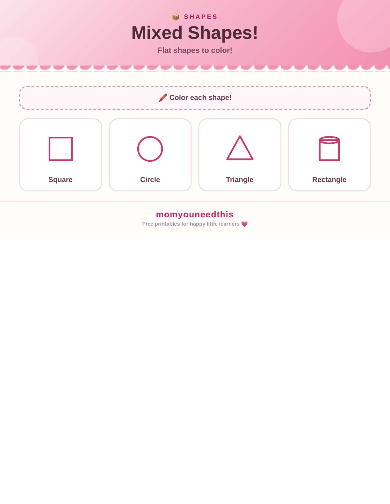

Mixed 3D Shapes Activities For Kids Review All Solid Shapes Together
Help your child master ALL the solid shapes at once with printable mixed 3D shape activities — the ultimate review of spheres, cubes, cones, cylinders, prisms, and pyramids.
Quick Answer
These free printable mixed 3D shapes activities help toddlers and preschoolers review spheres, cubes, cones, cylinders, rectangular prisms, and pyramids all together. The worksheet includes 3D shape sorting, matching, and find-the-shape games sized for little hands. Download and print at home with no signup needed — perfect for 3D geometry review.
At a Glance
- Ages: Toddlers and preschoolers
- Activity: Reviewing spheres, cubes, cones, cylinders, prisms and pyramids together
- Skills: 3D shape recognition review
- Format: Printable worksheet (PDF)
- Cost: Free, no signup
🧩 Learn Mixed 3D Shapes
Children sort and identify spheres, cubes, cones, cylinders, rectangular prisms, and pyramids mixed together — the ultimate 3D shape review challenge.

🖨️ Download Your Free Mixed 3D Shapes Printable
Sort the mixed 3D shapes, match each to its name, and hunt for solid shapes. Print it out, grab the crayons, and you are ready — no signup needed.
⬇️ Download Free Printable 🖨️ Print(opens in new tab)🎁 Free printable for toddlers & preschoolers
🎯 3D Shape Sorting Race
Turn learning into a game! Gather real objects — balls, boxes, cans, cones — and race to sort them into 3D shape piles. Which pile fills up fastest in your house?
💡 Why Practice Mixed 3D Shapes?
Mixing all the 3D shapes together is the real test — children must look carefully at faces, edges, and curves to tell a cylinder from a cone or a cube from a prism. That careful looking is the heart of geometry.
📚 Keep Exploring
Discover more free 3D shape activities, printables, and learning ideas created for busy parents.
🎁 Back to 3D Shape Activities